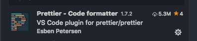

VSCODE设置VUE,REACT,TYPESCRIPT,自动格式化修复，智能感知
从官网下载vscode后，安装打开，提示要安装中文语言包，按照提示安装重启，界面就变成中文界面了
界面主题使用Atom One Dark Theme，插件搜索Atom One Dark Theme安装，界面风格非常干净，颜色也比较护眼
图标显示使用Material Icon Theme，插件搜索Material Icon Theme安装，文件图标非常齐全，搭配Atom One Dark Theme非常好看
格式化
使用的是prettier格式化方案，插件搜索Prettier

react , ts 和 js格式化
插件安装eslint tslint
yarn global add typescript
yarn global add tslint
yarn global add eslint
vue 格式化支持
按照插件Vetur
插件安装
常用插件
Chinese (Simplified) Language Pack for Visual Studio Code适用于 VS Code 的中文（简体）语言包veturvue tool 提供vue代码语法高亮，格式化等Auto Rename Tag改标签名的时候，自动更改闭合标签名Highlight Matching Tag高亮成对的标签Bookmarks书签插件，记录代码重点，review的时候更容易get对应的点Bracket Pair Colorizer括号着色，对于多个嵌套的括号对应识别精准Change Case代码变量声明时候，可以对已有变量切换成驼峰式，常量式，其他的风格filesize计算源码文件大小，并显示在左下角
GitLensgit历史查看，提交记录查看，历史比较，版本回滚，神器不解析
Import Cost计算import引入的文件大小
Live Server提供对HTML的即时服务预览，代码改动即时刷新Path Intellisense路径引入智能感知npm-intellisensenpm module 引入智能感知RegExp Preview and Editor正则表达式预览和编辑Settings Sync同步你的vscode设置，包括插件，主题一切用户数据Todo Tree显示你代码里面的TODO列表translate翻译Version Lensnpm version检测vscode-fileheader生成文档注释头minapp微信小程序标签、属性的智能补全（同时支持原生小程序、mpvue 和 wepy 框架，并提供 snippets）
配置
直接拷贝覆盖用户设置
使用自定义配置进行格式化，以下是我的vscode自定义设置
```json
{
// 编辑器和terminal外观设置
"editor.fontSize": 16,
"editor.letterSpacing": 0.2,
"editor.fontLigatures": false,
"terminal.integrated.fontSize": 16,
"terminal.integrated.fontFamily": "'Meslo LG M DZ for Powerline'", // 每次保存的时候自动格式化
"editor.tabSize": 2,
"eslint.autoFixOnSave": true, // 每次保存的时候将代码按eslint格式进行修复
"tslint.autoFixOnSave": true,
"prettier.eslintIntegration": true, // 让prettier使用eslint的代码格式进行校验
"prettier.tslintIntegration": true, // 让prettier使用tslint的代码格式进行校验
"editor.formatOnSave": true,
"editor.formatOnSaveTimeout": 500,
"prettier.semi": false, // 去掉代码结尾的分号
"prettier.singleQuote": true, // 使用带引号替代双引号
"javascript.format.insertSpaceBeforeFunctionParenthesis": true, // 让函数(名)和后面的括号之间加个空格
"vetur.format.defaultFormatter.js": "vscode-typescript", // 让vue中的js按编辑器自带的ts格式进行格式化
"vetur.format.defaultFormatterOptions": {
"prettyhtml": {
// 单行超过120个长度的时候开始换行显示各种参数和事件
"printWidth": 120
}
},
"eslint.validate": [
//开启对.vue文件中错误的检查
"javascript",
"javascriptreact",
{
"language": "html",
"autoFix": true
},
{
"language": "vue",
"autoFix": true
},
{
"language": "wxml",
"autoFix": true
}
],
"gitlens.advanced.messages": {
"suppressShowKeyBindingsNotice": true
},
"git.autofetch": true, // 自动拉取代码
// 颜色主题设置
"workbench.iconTheme": "material-icon-theme",
// 自动加注释头设置
"fileheader.Author": "zhangzhenfei@sythealth.com",
"fileheader.LastModifiedBy": "zhangzhenfei",
"material-icon-theme.activeIconPack": "react_redux",
"material-icon-theme.folders.theme": "specific",
"git.enableSmartCommit": true,
"git.confirmSync": false,
"editor.minimap.enabled": true,
"sync.gist": "349cdcce98ddea6ba914098513e36a03",
"files.associations": {
"*.cjson": "jsonc",
"*.wxss": "css",
"*.wxs": "javascript",
".gitmodules": "gitconfig",
"*.vue": "vue"
},
"emmet.includeLanguages": {
"wxml": "html"
},
"minapp-vscode.disableAutoConfig": true,
"todo-tree.defaultHighlight": {
"foreground": "green",
"type": "none"
},
"todo-tree.customHighlight": {
"TODO": {},
"FIXME": {}
},
"liveServer.settings.donotShowInfoMsg": true,
"editor.cursorStyle": "underline",
"html.format.wrapAttributes": "force-aligned",
"editor.wordWrap": "on",
"breadcrumbs.enabled": true,
"javascript.updateImportsOnFileMove.enabled": "always",
"javascript.implicitProjectConfig.checkJs": true,
"editor.tokenColorCustomizations": {},
"editor.fontFamily": "Monaco",
"gitlens.advanced.quickPick.closeOnFocusOut": false,
"gitlens.blame.ignoreWhitespace": true,
"gitlens.codeLens.authors.enabled": false,
"gitlens.codeLens.enabled": false,
"workbench.colorTheme": "Atom One Dark",
"prettier.printWidth": 120,
"files.autoSaveDelay": 200,
"window.zoomLevel": 0
}
每次进行保存的时候都会进行格式化，解放劳动力，效果如下